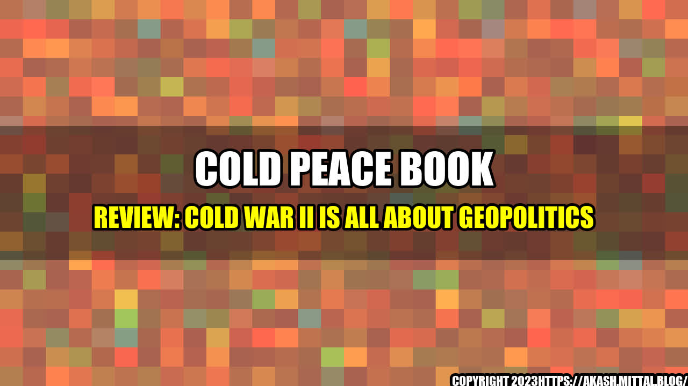

Cold Peace Book Review: Cold War II Is All About Geopolitics

The world is once again on the brink of a cold war. The new cold war is not about ideology, but rather about geopolitics. Countries are jostling for power and influence, trying to position themselves for the new era of global dominance. There are many examples of this new cold war in action. Take, for instance, the conflict between the United States and China. The two superpowers are engaged in a bitter struggle for global supremacy. The United States has accused China of stealing its intellectual property, and of engaging in unfair trade practices. China, for its part, has accused the United States of trying to contain its rise, and of interfering in its internal affairs. Another example is the conflict between Russia and the West. The West has accused Russia of meddling in its elections and of annexing Crimea. Russia, for its part, has accused the West of trying to encircle it, and of interfering in its sphere of influence. These conflicts are not just about individual issues, but are part of a broader struggle for power and influence on the world stage.
Case Studies
The book, "Cold War II: The Geopolitics of the New Cold War," by Robert D. Kaplan, is an excellent analysis of the new cold war. Kaplan argues that the new cold war is all about geopolitics, and that it is driven by a struggle for power and influence on the world stage. Kaplan uses several case studies to illustrate his point. One of these case studies is the conflict in Syria. The conflict in Syria is not just a civil war, but is part of a broader struggle for power and influence in the Middle East. The United States, Russia, Iran, and other countries are all involved in the conflict, trying to position themselves for the new era of global dominance. Another case study is the conflict in Ukraine. The conflict in Ukraine is not just a territorial dispute, but is part of a broader struggle for power and influence in Eastern Europe. The West and Russia are both involved in the conflict, trying to expand their sphere of influence in the region. These case studies illustrate the broader struggle for power and influence on the world stage. They show that the new cold war is not just about individual conflicts, but is part of a broader struggle for dominance.
In conclusion, the new cold war is all about geopolitics. It is not just about individual conflicts, but is part of a broader struggle for power and influence on the world stage. Here are three key points to remember:
The new cold war is not about ideology, but is driven by a struggle for power and influence on the world stage.
The new cold war is characterized by conflicts in hotspots around the world, from Syria to Ukraine.
The new cold war is not likely to abate anytime soon, as countries continue to jostle for power and influence on the world stage.
References and Hashtags
References: Kaplan, Robert D. Cold War II: The Geopolitics of the New Cold War. Random House, 2015. Hashtags: #ColdPeaceBookReview #ColdWarII #Geopolitics #ForeignPolicy #GlobalDominance #UnitedStates #China #Russia #Syria #Ukraine #PowerAndInfluence #Hotspots Keywords: Cold Peace Book Review, Cold War II, Geopolitics, Foreign Policy, Global Dominance, United States, China, Russia, Syria, Ukraine, Power and Influence, Hotspots Category: International Relations
Curated by Team Akash.Mittal.Blog
Share on Twitter Share on LinkedIn